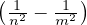

fe(e)de = e-e de distribuzione energia di Maxwell
de distribuzione energia di Maxwell
S = NkB entropia gas di oscillatori armonici
zωCN = αωCNzωx legge di Kirchhoff
P = equazione di stato corpo nero CN
z = ∫ 0∞dωzω = σT4 legge di Stefan-Boltzmann
uω = legge di Planck
Relazioni di Plank-Einstein:
|
|
λdB = lunghezza d’onda di deBroglie
Δλf = 2λC sin2 legge di Compton
λn,m = R formula di Rydberg per l’idrogeno (n < m)
λa,b,n,m = R formula di Rydberg per il sodio
R = costante di Rydberg

 con
con 


 posizione
posizione

 quantitá di moto
quantitá di moto

 momento angolare
momento angolare